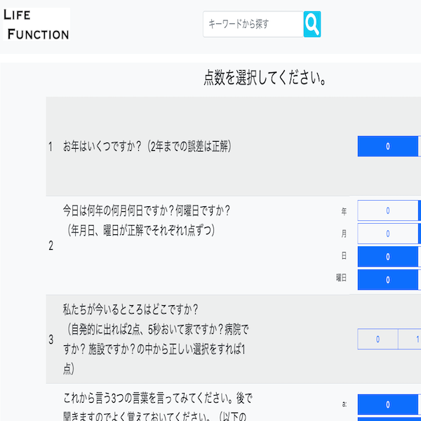

LifeFunction
開発環境
Ruby / Ruby on Rails / MySQL / GitHub / Heroku / Visual Studio Code
-
概要
制作時間 90時間 URL https://life-function-app.herokuapp.com/ ID admin PASS 2222 -
動作テスト
テスト用アカウント
mail test@test.com PASS a00000
OUTLINEアプリケーションの概要
LifeFunctionAppは、看護師やその他医療従事者でパソコンを苦手とする方にも使いやすいUIデザインを考えたオリジナルアプリケーションです。
Webアプリケーションなのでipadやパソコンで認知機能評価を管理できます。
主な機能は、利用者の登録機能、その利用者の認知機能をアンケートのようなフォームで入力し得点を記録します。
個人情報を含むアプリケーションなので、トップページにアクセスする際にはログインを求められます。
ユーザー登録するとトップページに遷移し、利用者が一覧表示されます。
利用者をクリックすると詳細画面に遷移し、「評価する」ボタンが出現します。
「評価する」ボタンをクリックすると検査が実行されます。
評価の入力フォームは、点数によって非同期通信で得点欄の表示を変更します。
-
開発に至った経緯
病院勤務で紙のカルテで管理する際に、評価用紙を探したり、閲覧はその場所に行かなければならなかったり、時間的なコストが掛かっていたため、その時間的なコストを削減するために開発しました。
また以前別の書類作成支援システムを作成した際に、年配の職員から、「パソコンが苦手。触りたくない。」という意見がありました。 これを解決できるシンプルなUIデザインをしてみようと考え開発をしました。パソコンを苦手とする方の問題点として、英語の記載がある、ボタンの数が多い、文字が小さいと言った問題点がありました。しかし、書類入力速度を高めるように選択はマウスで入力できるようにすると苦手意識が減少した方が何人もおられました。 これは以前Excelで似たような書類作成支援システムを作成した際に、パソコンが苦手な方にシステムを使って頂いて独自に分析をした結果です。
ただでさえキーボードにはたくさんのボタンが配置され、一部英語表記があります。この時点で、利用者は「失敗したらどうしよう」「壊してしまうのではないか」といったイメージがあるようです。
このアプリケーションは、極力画像ファイルの配置を抑え、ボタンの数を減らしたり、文字の大きさを大きくし、マウスを使ったUI操作にすることで迷うことが少ないシンプルなデザインになるように設計しました。
-
開発で工夫したこと
1つめがパソコンが苦手な方にわかりやすいように、入力はラジオボタンやリスト形式になるようにしました。
2つめができる限り日本語表記し、日本人がわかりやすくシンプルなUIで直感的に操作にすることを意識しました。
オンラインスクールで知り合った方に、アプリを利用してもらいユーザーヒアリングをしながら実装しました。
-
今後実装したいと思っていること
特に実装したい機能は2つあります。
1つ目が登録された施設ごとにトップページに表示される利用者の情報を制限することです。個人情報を含むため、表示される利用者の制限が必要です。
2つ目が準備物がパソコンもしくはタブレットだけになることです。今は、短期記憶の検査の項目上、検査キットが別途必要です。これはアナログで用意することと変わりません。そこでJavaScriptを使って、検査キットの画像が表示される機能の実装を行い準備物が少なくなるようにしたいと考えています。また野菜の名前を記載し保存する項目で音声保存機能を実装し入力の手間が省けるような実装をしたいと考えています。